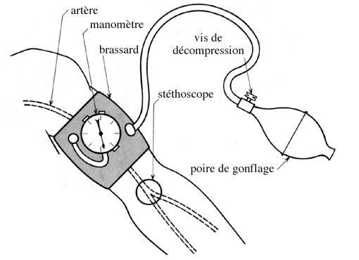

La pression arterielle non invasive : PNI
DefinitionLa pression arterielle ou tension arterielle est la force exercee par le sang sur les parois arterielles et qui tend ces parois.
La pression arterielle est une variable entre deux extremes :
- La pression arterielle systolique (PAS) : pression dans les arteres au moment de la contraction cardiaque, on l'appelle encore en langage courant " maxima ".
- La pression arterielle diastolique (PAD) : pression dans les arteres pendant le relechement du ventricule, on l'appelle encore en langage courant " minima ".
- La pression arterielle moyenne (PAM) : moyenne de la pression arterielle systolique (PAS) et de la pression arterielle systolique (PAD).
- Entre ces deux valeurs (PAS et PAD), on a la Pression Differentielle ou Pression Pulsee : c'est elle qui donne la sensation du pouls.
- Soin infirmier sur rele propre : art. R.4311-5 decret 2004-802 du 29/07/2004.
Indications
- Surveillance de l'hemodynamique.
- Surveillance d'un traitement : efficacite, effets secondaires.
Materiel Mesure auscultatoire
- Stethoscope.
- Tensiometre ou Sphygmomanometre :
- Manometre aneroede a cadran gradue en millimetre de mercure (mmHg) qui mesure la pression dans le brassard.
- Poire de gonflage munie d'une valve
permettant a l'air du brassard de s'evacuer.
- Brassard circulaire inextensible muni d'une poche de caoutchoux gonflable : la dimension doit etre adaptee e la circonference du bras pour assurer une compression efficace de l'artere :
- Si la poche gonflable est trop etroite, la pression arterielle sera surestimee.
- Si la poche gonflable est trop large et trop longue, la pression arterielle sera sous-estimee.
- La poche doit recouvrir les 2/3 de la longueur du bras et les 2/3 de sa circonference. Ce qui fait qu'un brassard destine a l'adulte doit avoir une poche gonflable de 13 a 15 cm de large sur 30 a 35 cm de long.
| Circonference du bras | Taille du brassard | |
| > 20 cm | largeur entre 8 et 11 cm | longueur entre 13 et 20 cm |
| < 33 cm | largeur entre 11 et 13 cm | longueur entre 20 et 28 cm |
| > 33 cm | largeur entre 16 et 20 cm | longueur entre 32 et 42 cm |
- Appareil electronique a affichage digital : Dynamape .
Realisation du soin
- Prevenir le patient.
- Effectuer un lavage simple des mains ou effectuer un traitement hygienique des mains par frictions avec une solution hydro-alcoolique : hygiene des mains.
- S'assurer que le patient est detendu, confortablement installe, au calme depuis plusieurs minutes.
- Effectuer la mesure a distance de tout evenement favorisant une augmentation des chiffres tensionnels: l’emotion, l’exposition au froid, les efforts physiques, le repas, la consommation de tabac dans la demi-heure precedente, la douleur, la repletion vesicale.
- Le bras doit etre libre de tout vetement eventuellement constricteur, c’est-e-dire nu.
- Reperer la zone de battement maximal de l’artere humerale au pli du coude.
- Installer le brassard en s’assurant que le centre de la poche gonflable soit positionne en regard du trajet de l’artere humerale et que le bord inferieur du brassard reste 2 a 3 cm au-dessus du pli du coude.
- Placer le stethoscope sur le battement humeral au pli du coude.

- Gonfler le brassard pour une premiere estimation de la PAS jusqu’e la disparition du pouls radial.
- Gonfler de nouveau le brassard environ 30 mmHg au-dessus du point de disparition du pouls.
- Degonfler doucement le brassard, avec lecture simultanee de la pression arterielle sur le manometre. Un degonflage trop rapide sous-estime la PAS et surestime la PAD.
- Phase 1 : perception pour la premiere fois au moins 2 bruit consecutifs : valeur de la pression arterielle systolique.
- Phase 2 : bruits doux et prolonges.
- Phase 3 : bruits renforces et brefs.
- Phase 4 : bruits assourdis et doux.
- Phase 5 : disparition des bruits systoliques : valeur de la pression arterielle diastolique.
- Premiere perception au doigt d'un pouls humeral ou radial : valeur de la pression arterielle systolique.
- Cette mesure ne renseigne pas sur la valeur de la pression arterielle diastolique mais que sur la pression arterielle systolique.
- Cette mesure n'est pas fiable pour une pression arterielle systolique inferieure a 70 mmHg.
Surveillances et evaluations
| Pression arterielle : Norme OMS chez l'adulte > 18 ans | ||
| Classification | Pression systolique (mmHg) | Pression diastolique (mmHg) |
| Pression arterielle optimale | < 120 | < 80 |
| Pression arterielle normale | < 130 | < 85 |
| Pression arterielle normale haute | 130 - 139 | 85 - 89 |
| Degre 1 HTA legere | 140 - 159 | 90 - 99 |
| Degre 2 HTA moderee | 160 - 179 | 100 - 109 |
| Degre 3 HTA severe | 180 | 110 |
Voir aussi :